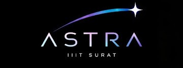

Observational astronomy
THE NIGHT SKYTelescope practice, skywatching sessions, celestial event logs, and astrophotography.
→
A campus home for curious minds, clear nights, and the science behind everything out there.
ASTRA is IIIT Surat’s premier interdisciplinary space-tech and astronomy club. Designed to bridge the gap between theoretical astrophysics and applied engineering, ASTRA provides a collaborative platform for students across all departments to channel their passion for space into hands-on technology, software development, and observational sciences.
To democratize space-technology education on campus by equipping students with practical software, hardware, and analytical skills, transforming a childhood fascination with space into a tangible engineering portfolio.
Telescope practice, skywatching sessions, celestial event logs, and astrophotography.
→Explore Hubble’s law, exoplanet data, orbital simulations, and the physics of the universe.
→Work with real astronomy datasets, model planetary motion, and build tools for discovery.
→Learn optics and sensors, explore satellite systems, and build telescope and tracking projects.
→Study satellite orbits, tracking, ground stations, and the systems that carry signals across space.
→Event management, design, content creation, social media.
·ASTRA was born in April 2026 from a shared realization: IIIT Surat needed a home for space enthusiasts. What started as a few students wanting to look at the stars quickly grew into a mission to build a serious space-tech ecosystem on campus.

New to astronomy? Start by looking up with us. ASTRA learns together, from the first constellation to the first working instrument.
Somewhere above campus,
there’s always something to see.